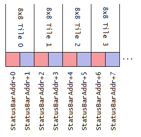
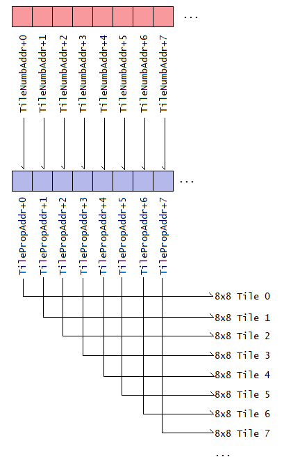

Layer 3 tile data format
This document explains the tile format of some status bar (and overworld border plus) patches relating to writing on layer 3
background plane. Because SMW's original status bar, Ladida's SMB3 status bar and Minimalist Status Bars are different formats,
it is worth explaining how to deal with such patches.
It is important to note that even if using SMW's status bar, each tile have their data stored in two bytes, the tile number (TTTTTTTT)
and its tile properties (YXPCCCTT):
- SMW's vanilla status bar have only its tile number table stored at address $7E0EF9 to $7E0F2F, while the default tile number
and properties table stored at ROM address $008C81 to $008CFE.
- Using the Super status bar patch, the RAM address differs depending what you set the freeram define (“!RAM_BAR”, which is currently
$7FA000 by default on a normal ROM and $404000 by default on a SA-1 ROM). This address ranges from !RAM_BAR to !RAM_BAR+319.
The tile number and properties byte format is the same as SMW's $008C81 to $008CFE but in RAM and can be modified in-game.
Both of these patches stores the data like this:

Colored in light-red is the tile number (TTTTTTTT) and light-blue for tile properties (YXPCCCTT). Both bytes are placed next to one another as a pair for
an 8x8 tile. Therefore if you want to read or write the next tile, you move 2 bytes over as opposed to 1.
Ladida's Status bar patches, however have their types be in separate tables, where moving to 1 byte next means the next 8x8 tile:

Thus, loops to write tiles to the status bar is slightly different depending on the byte format, that you should set !StatusBarFormat to $01 for SMW/Ladida's status bar and
$02 for Super status bar/Overworld border plus.